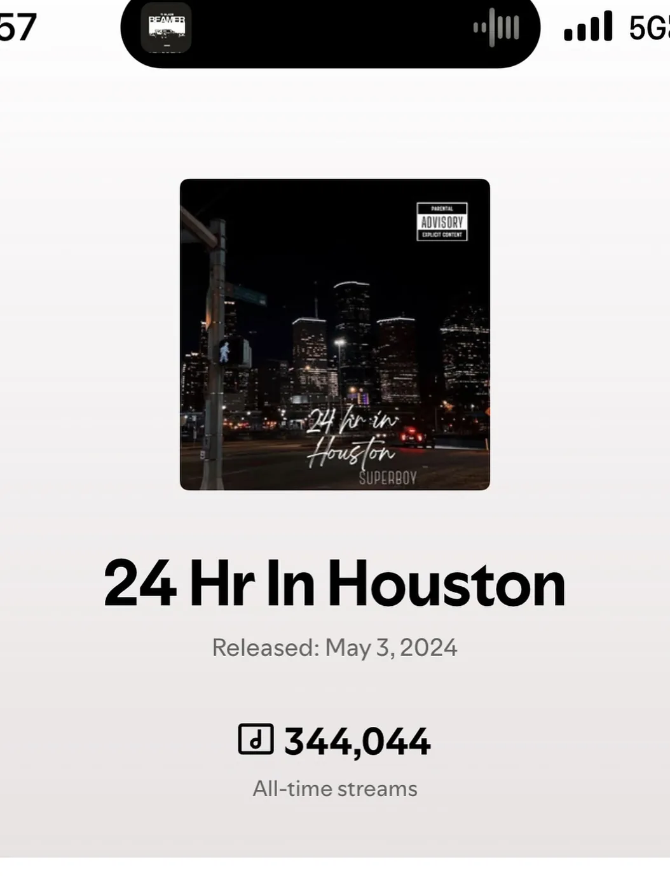
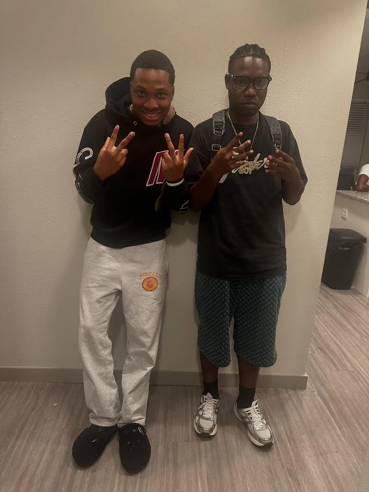
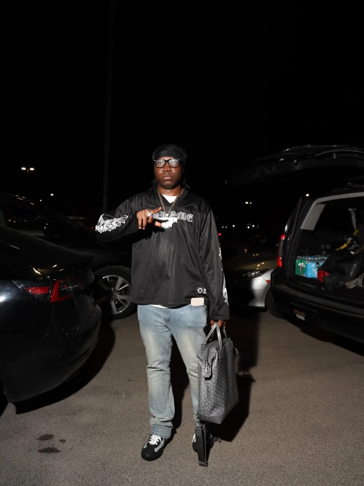

Release proof
344,044
All-time streams shown on the “24 Hr In Houston” proof visual.
Released May 3, 2024
This page is built to turn covers, proof screenshots, and track names into an actual listening path.

A six-track project surface anchored by the confirmed cover art and tracklist.
All-time streams shown on the “24 Hr In Houston” proof visual.
Released May 3, 2024

Proof asset turned into a campaign card for credibility.

Visual world for rollout clips and landing-page motion.

Collab/feature-ready visual treatment.

Use this slot for the next single, snippet, or video.